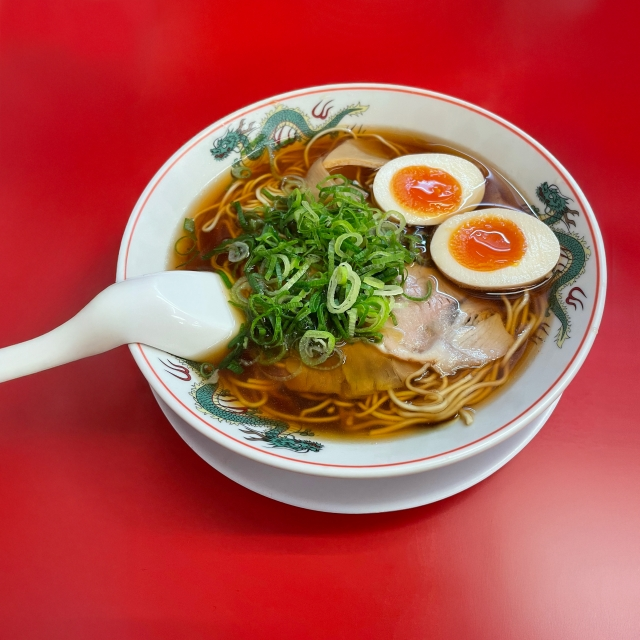
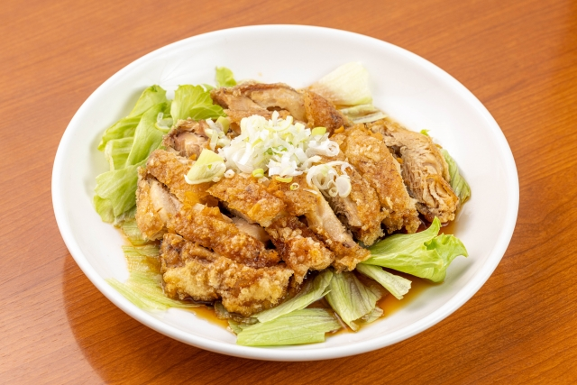

中華料理編
チャーハン

チャーハン特有のパラパラ食感と香ばしい香りが最高
具材の組み合わせでたくさんのバリエーションが楽しめるところも魅力。
家庭でも比較的簡単に作れるのもうれしいポイント
ラーメン
ラーメンにはたくさんの種類がありますが一番好きな種類はあっさり醤油ラーメン
あっさりとしたスープはシンプルでありながら、出汁や醤油の奥深い味わいが最高！
ネギが好きなのでネギがたくさん入ったものが良い
油淋鶏
カリカリに揚がった鶏肉と少し酸味のあるタレの組み合わせが最高！
パリパリの皮部分が特に美味しい。タレに入っているネギもとても美味しい。